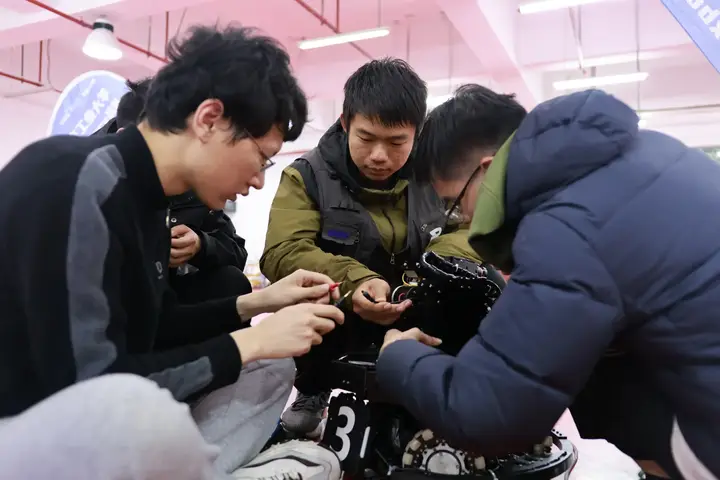
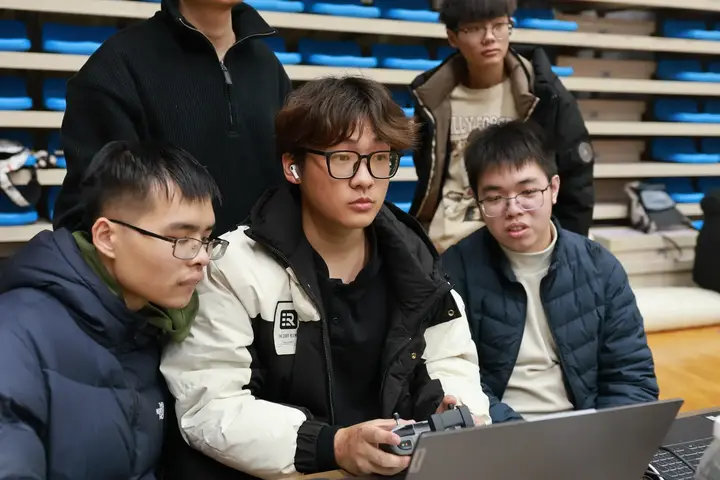
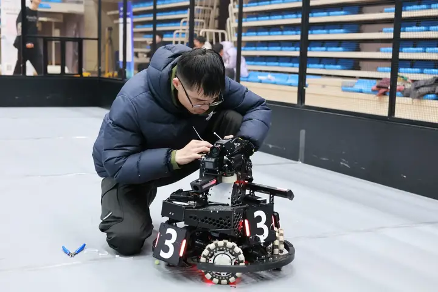

机械结构
Mechanical喜欢把东西拆开再装回去？这里可以从建模、加工一直做到整机装配。
我们招募愿意把「我不会」变成「我试试」的人。 不需要你一开始就什么都会，需要你愿意把问题拆开、再一块块拼好。
五个方向面向全校招募，专业不限。我们更关注你的动手意愿、学习曲线与协作方式。



喜欢把东西拆开再装回去？这里可以从建模、加工一直做到整机装配。
写固件、调电机、看波形。让底盘的每一次响应都精确可控。
让机器人「看懂」赛场：检测、跟踪、解算，最终换来更稳的命中。
做工具、搭仿真、写调试上位机，让整个队伍的研发效率更高。
拍摄、剪辑、文案、招新与赛事运营——把战队的故事讲给更多人听。
完全可以。战队有带训机制，从工具到方法都会有人带你上手——先看 FAQ 里的常见问题。
Process
流程不复杂，但每一步都会让你更清楚：自己到底想在这里做成什么。
报名通道：本期报名的具体时间、报名表链接与招新群信息，将于招新季在战队官方渠道公布。
我们不假设你什么都会。下面是大多数队员真实走过的路—— 每一步都有具体的事可做，也都有反馈。
从最基础的开始：看懂一张工程图、跑通第一个点灯程序、装好第一套开发环境。 目标不是做出来什么，而是知道自己要学什么。
比如一个云台支架、一段电机闭环、一个识别脚本。范围小、责任实， 做完能装到车上跑，也能被队友使用。
开始和别的方向打交道：结构配合电控、视觉配合操作手。 这个阶段最难的不是技术，是把「我这边没问题」变成「整机没问题」。
从「完成任务」到「定义任务」：自己判断该做什么、怎么验证、 怎么把方法交给下一个人。这是战队对核心队员的要求。
真实的工程环境与设备支持、从零到整的完整项目经验、一群能一起熬夜调车的队友，以及一段足够具体的大学记忆。
好奇心、耐心与责任心。能把问题描述清楚、愿意动手验证、不逃避复盘的人，在这里成长得最快。
赛季期间需要稳定的课余投入。我们不要求你放弃生活，但希望你对自己的承诺负责。
FAQ
可以。战队面向全校招募，绝大多数新队员都是从零开始。入队后有带训环节，从工具使用、基础知识到实际任务逐步推进。
不限专业。机械、电控、视觉、软件与运营五个方向都需要不同背景的同学，跨专业组队恰恰是工程实践的常态。
赛季冲刺阶段投入会明显增加。日常以课余时间为主，具体节奏与组内安排有关，建议在面谈时直接和对应方向的队员聊清楚。
日常开发建议自备电脑。加工设备、测试场地与整机硬件由战队与工程实验教学部提供支持。
可以。只要你能保证稳定的投入周期，任何年级都欢迎。高年级同学往往在特定方向上有更深的积累。
想先看看我们平时在做什么？战队 B 站账号会持续更新比赛集锦与开发日志。
南京邮电大学仙林校区 · 工程实验教学部
南京市栖霞区文苑路 9 号官方邮箱与招新咨询邮箱将在招新季公布。
待补充